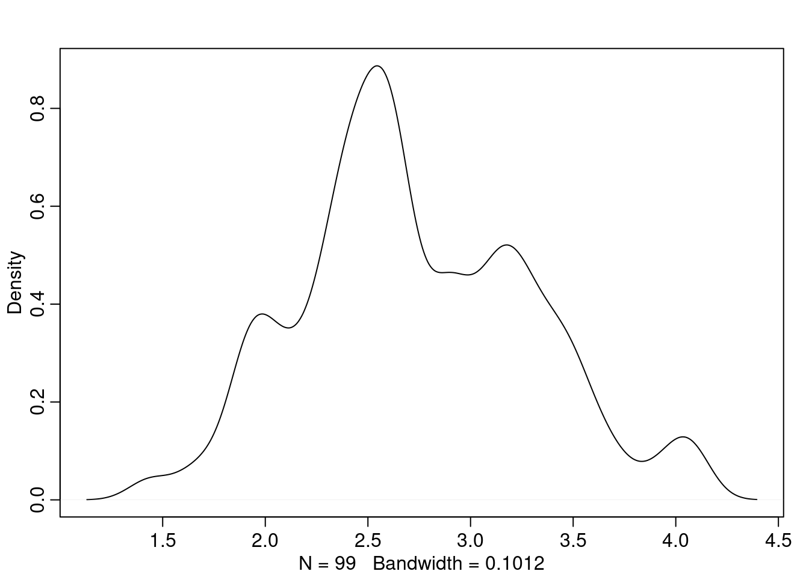

N <- 200
#sample states of the world.
s <- sample(c(0,1), N, replace = TRUE)
head(s, n = 10) [1] 1 1 0 0 1 1 1 1 1 0This is a simple R recreation of the Political Agency and Accountability Model as extensively described in the book ‘Principled Agents’. The goal of this blog is to create a generative simulation of the model and was originally created for author’s own understanding than for description or expression. However, the blog is public (and especially the code) in the hope that it helps someone.
There are only time periods in this model : \(t\in \{1,2\}\). A politician is elected to make a single political decision \(e_t \in \{0,1\}\) depending upon the state of the world, \(s_t \in \{0,1\}\). Given the model assumes that nature determines the states of the world, here I’ve run 200 different states of the world with equal probabilities.
N <- 200
#sample states of the world.
s <- sample(c(0,1), N, replace = TRUE)
head(s, n = 10) [1] 1 1 0 0 1 1 1 1 1 0Voters receive a pay-off if \(e_t = s_t\) and \(0\) otherwise. There is a discounting factor \(\beta\), by which voters and politicians discount future returns.
The model gets interesting when we assume that there are two types of candidates that run for the election : Congruent(C) and Dissonant(D). Congruents occupy a share \(\pi\) of the candidate population and dissonants \((1-\pi)\).
pi <- 0.5
candpool <- rbinom(N, 1, prob = (1-pi)) + 1
# here congruent is 1 and dissonant is 2.A congruent voters always acts as per the state of the world i.e. \(e_t = s_t\). This means that when a congruent politician is in office, voters always receive a payoff.
On the other hand, a dissonant politician’s action depends upon the rent she receives from various interest groups. The rent \(r_t\) comes a from a cumulative distribution function \(G(r_t)\) whose mean is \(\mu\). Both congruents and dissonants, if they are elected, receive some ego rent \(E\) as payoff.
Since the game ends in period 2, the equilibrium in period 2 is that both types of politicians act as their type :
\[ e_2(s,c) = s_2 \] \[ e_2(s,d) = (1-s_2) \]
However, in period 1, there is an incentive for dissonants to act congruent. This is because the model assumes that voters are willing to re-elect a candidate if and only if they receive a payoff, which only happens if you act in a congruent fashion.
This logically implies a decision rule for a dissonant to act as congruent. A dissonant politician will act as congruent if:\[ r_1 < \beta(\mu+E) \] \[ \lambda = G\{\beta(\mu+E)\} \]
In words: if the rent (explicitly bribe) I receive in period 1 is less than my discounted returns from period 2, I will want to be in office in period 2. For that I must be re-elected and for that I must act as congruent in period 1. If \(\lambda\) is the probability that a dissonant acts as congruent, then lambda can be obtained from the CDF of \(G\).
Let the CDF of \(G(r)\) be a log-normal distribution.
r_1 <- rlnorm(N[candpool == 2], mean = 1, sd = 0.2)
#remember rent is only a variable to consder for dissonans i.e. candpool == 2
dens(r_1)
Similarly, let’s have fixed Ego-rent (E) of holding office and \(\beta\).
E <- 1
beta <- 0.9With this, we can model our payoff function.
payoff <- vector(length = N)
mu <- exp(1)
# delta here is 1 and no payoff is 0
payoff <- ifelse(candpool == 2, ifelse(r_1 > beta*(mu + E),0,1), 1)Two parameters are of utmost importance to us: \(\lambda\) i.e. the probability that a dissonant acts as congruent, and \(\prod\), which can be written as:
\[ \prod = P(C | \Delta) = \frac{P(\Delta|C)\cdot P(C)}{P(\Delta)} = \frac{\pi}{\pi + (1-\pi)\cdot \Delta} > \pi \]
\(\prod\) is the updated belief about the candidate pool (or the belief that the incumbent is congruent) after they have received a payoff of \(\Delta\). Since some dissonants act as congruents in period 1, \(\prod\) is bound to be greater than true proportion of congruents \(\pi\).
Let’s calculate this:
emp_pi <- sum(candpool == 1) / length(candpool) # emp stands for empirical pi. While true pi is 0.5, emp_pi may change depending upon the sample/simulation
emp_lambda <- 1 - (sum(payoff == 0)/sum(candpool == 2))
big_pi <- emp_pi/ (emp_pi + (1-pi)*emp_lambda)
tibble(
Lambda = round(emp_lambda,2),
Pi = emp_pi,
BigPi = round(big_pi,2)
)# A tibble: 1 × 3
Lambda Pi BigPi
<dbl> <dbl> <dbl>
1 0.82 0.47 0.53The model is not described extensively here. For a thorough explanation and mathematical implications see Principled Agents.↩︎